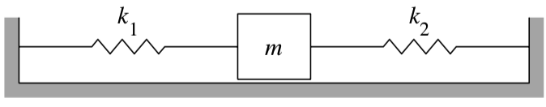
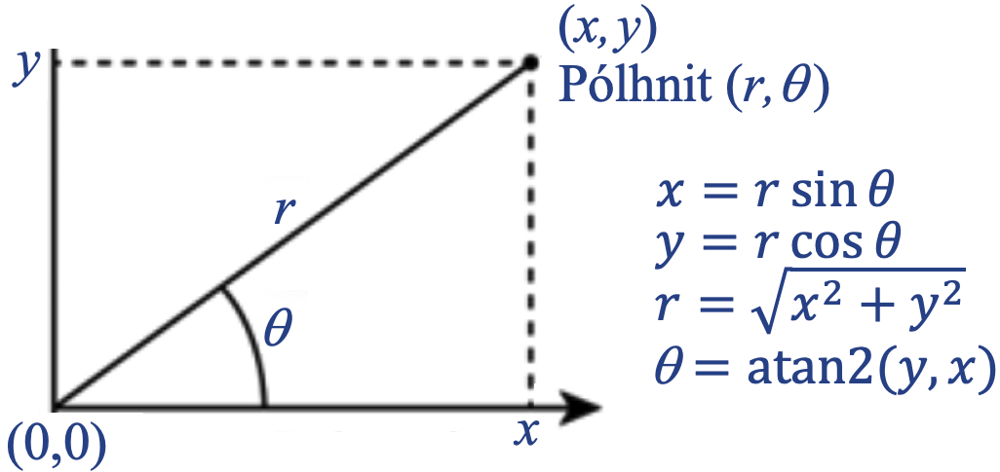

Python er forritunarmál sem kom fram árið 1991 og hefur náð mikilli útbreiðslu. Það var hollenski tölvufræðingurinn Guido van Rossum sem bjó Python til og spilaði stórt hlutverk í þróun þess, en margir fleiri hafa lagt hönd á plóg. Málið heitir eftir grínistahópnum Monty Python (sem aftur dregur nafn af kyrkislöngum, pythons).
Vinsælasta útgáfan af Python nefnist formlega CPython og er opin og ókeypis. Hana er að finna á python.org og þar má líka lesa um Python Software Foundation sem hefur síðan 2001 séð um þróun málsins, leyfi, dreifingu, Python-ráðstefnur o.s.frv.
Frá upphafi var markmiðið að búa til einfalt og auðlært forritunarmál, sem væri þannig að oftast væri bara ein augljós og einföld leið til að útfæra tiltekna aðgerð eða reikninga. Forrit áttu að samanstanda af enskum orðum að mestu leyti en ekki samansuðu tákna eins og algengt er t.d. í Perl-forritum, sem minna á blótsyrði í Andrés-blaði.
Með Python fylgir viðamikið fallasafn (standard library) og auk þess eru til ótal viðbætur sem kallast pakkar (packages) og eru ekki hluti af hinu eiginlega forritunarmáli. Opinber pakkavefur fyrir Python hefur 282.000 pakka í janúar 2021, og hann fer ört vaxandi (voru 164.000 í janúar 2019). Fallasafnið samanstendur af mörgum einingum (modules), og það sama gildir um flesta pakka. Það er sama hvort ætlunin sé að tengjast Oracle gagnagrunni, búa til vefsíðu, skrifa tölvuleik eða leysa stærðfræðileg verkefni: maður getur alltaf fundið vandaðan og almennan Python-pakka í verkið. Síðar í þessum nótum verður fjallað um nokkra slíka m.a. NumPy (fyrir vigur- (vector-) og fylkjareikninga), SciPy (fyrir reiknifræði), Pandas (fyrir gagnavinnslu) og Matplotlib (til að teikna).
Ýmsir vefir mæla vöxt og vinsældir forritunarmála og mælist Python í efstu sætunum á þeim flestum, ásamt Javascript, Java, C, C# og C++. Á einum þeirra má t.d. finna eftirfarandi mynd:
Python er túlkað forritunarmál sem þýðir að forrit eru ekki þýdd fyrirfram á vélamál, heldur eru skipanir þess lesnar af Python túlkinum hver á fætur annarri og framkvæmdar jafnóðum. Hægt er að hugsa sér að túlkurinn hermi eftir ímynduðum gjörva sem hefur Python sem móðurmál. Þetta er reyndar nokkur einföldun, því Python er venjulega þýtt yfir á millimál sem er fljótlegra að túlka. Túlkuð forrit keyra hægar en þýdd, en á móti kemur að ekki þarf að bíða eftir þýðingu, og auk þess fylgja ýmsir kostir fyrir villuleit og þróun forrita skref fyrir skref.
Eitt sem skilur Python frá ýmsum öðrum forritunarmálum, t.d. Java og C, er að það er engin þörf á að skilgreina breytur fyrirfram og segja Python-kerfinu af hvaða tagi (type) þær séu. Vissulega hefur Python allskyns tög (types), heiltölur, kommutölur, strengi, vigra, mengi o.s.frv., en það eru gildin sem breyturnar fá sem hafa tög, en ekki breyturnar sjálfar. Forrit getur haft skipun x=3.5, og þá verður x kommutala, og neðar getur svo staðið x={2,5,8} og eftir það er x mengi.
Collatz-runur eru reiknaðar þannig að byrjað er með einhverja tölu \(n_0\)
og svo er næsta tala reiknuð aftur og aftur skv.
\[\begin{split}n_{k+1} = \begin{cases}
\displaystyle\frac{n_k}{2} \text{ ef $n_k$ er slétt tala}\\
3n_k+1 \text{ ef $n_k$ er oddatala}
\end{cases}\end{split}\]
Ef nýja talan \(n_{k+1} = 1\) þá er hætt.
Ef við byrjum t.d. með \(n_0=5\) þá fæst runan 5, 16, 8, 4, 2, 1. Runurnar heita eftir þýska stærðfræðingnum Lothar Collatz (1910–1990) sem setti fram þá tilgátu árið 1937 að það sé sama hvaða \(n_0\) er byrjað með, runan muni alltaf að lokum lenda í 1 og hætta. Enn hefur engum tekist að sanna tilgátuna, og reyndar virðast jafnvel færustu stærðfræðingar ekki hafa hugmynd um hvernig ætti að byrja.
defnæsta(x):'''skilar næstu tölu á eftir x í Collatz-runu'''ifx%2==0:f=x//2else:f=3*x+1returnfdefcollatz_runa(n):'''finnur og skrifar út Collatz-runu sem byrjar á n'''print('runa: ',end='')whilen>1:print(n,end=', ')n=næsta(n)print(n)# Forrit sem prentar út Collatz-runur sem byrja á 2, 3,...,7:print('Nokkrar Collatz-runur')forninrange(2,8):collatz_runa(n)
1.2.3. Python atriði sem koma fyrir í forritinu Collatz¶
Ný föll má skilgreina með því að byrja á def og nöfn þeirra mega hafa
íslenska stafi (og líka gríska). Á eftir def-línunni er hefð fyrir að setja
skjölunarstreng innan þrefaldra gæsalapa. Nánar tiltekið er ritað:
Það má líka sleppa eða hafa fleiri elif kafla og/eða sleppa else kafla.
While-lykkjur hafa snið
whileskilyrði:skipanir
For-lykkjur hafa snið
forkinrange(b,e):skipanir
k tekur þá gildi b, b+1,…, e–1. range(e) jafngildir
range(0,e), og svo má taka stærri skref: range(b,e,d) hleypur
í gegn um k = b, b + d, b + 2d,… og hættir ef k ≥ e.
Athugasemdir (comments) byrja á #
Virkinn % gefur afgang úr deilingu (mod)
// gefur heiltöludeilingu (og ef útkoman er brot er hún lækkuð niður í átt að 0)
Eins og í flestum forritunarmálum er „=“ gildisgjöf (assignment) og „==“
samanburður
Föll sem skila gildi enda oftast á returngildi
Inndráttur er notaður til að sýna hvar blokkir enda (þ.e.a.s. blokkir sem def, if, else, while o.fl. skilgreina). Skipanir sem byrja slíkar blokkir enda alltaf á :
Strengi má búa til með því að setja einfaldar gæsalappir utan um þá, en líka má
nota tvöfaldar, t.d. "strengur".
Til að kalla á fall er notað nafn(viðföng) (t.d. næsta, collatz_runa og innbyggða fallið
print)
Fallið print fer sjálfkrafa í næstu línu eftir prentun, nema ef viðbótin
end=… er með.
Æfing
Á vefnum programiz
er hægt að prófa Python forrit. Farið þangað og afritið (eða sláið inn) forritið
Forrit 1.1 (þ.e. Collatz). Prófið nokkrar fleiri byrjunartölur, m.a.
27.
Í þessum fyrirlestrarnótum er miðað við að notað sé umhverfi sem nefnist JupyterLab. Segja má að JupyterLab sé arftaki kerfis sem nefnist Jupyter Notebook. Skipanirnar eru að mestu þær sömu en JupyterLab er að ýmsu leyti nútímalegra og höfundar þess búast við að það muni um síðir leysa Jupyter Notebook af hólmi.
Auðveldasta leiðin til að setja upp bæði Python og Jupyter í einu lagi er að setja upp hugbúnaðarpakka sem nefnist Anaconda (sem er stærsta kyrkislanga í heimi, sbr. að Python er líka svoleiðis slanga). Með Anaconda fylgir nýjasti Python túlkurinn, Jupyter, meira en 1000 vinsælir Python-pakkar (þar á meðal þeir þrír sem taldir eru að ofan, NumPy, SciPy og Matplotlib) og ýmislegt fleira. Til að setja það upp þarf að heimsækja anaconda.com, velja Products–Individual Edition, hlaða niður 64 bita Graphical Installer fyrir ykkar stýrikerfi og fylgja leiðbeiningum.
Eftir uppsetningu Anaconda má smella á „Anaconda-Navigator“ appið og velja þar JupyterLab. Þá opnast JupyterLab í glugga í aðalvafra tölvunnar. Heimamappa er sjálfgefin í fyrsta sinn, en næst opnast JupyterLab á sama stað og síðast var hætt. JupyterLab-glugginn lítur svona út:
Hér hefur verið byrjað í möppunni dropbox/strei undir heimamöppu. Þarna eru tvær undirmöppur og fjórar skrár: tvær vinnubækur eða Jupyter-bækur (auðkenndar með .ipynb, en Jupyter hét áður IPython), eitt Python-forrit (auðkennt með .py) og ein pdf-skrá. Til að búa til nýja vinnubók er smellt á efri Python 3-hnappinn, og þá opnast bókin í nýjum flipa í vafranum. Hún heitir sjálfkrafa Untitled2 en með því að hægri-smella á nafnið (eða smella á File) og velja Rename notebook má skíra hana einhverju skynsemlegra nafni. Eldri bók er opnuð með því að smella á hana í skráalistanum vinstra megin.
Vinnubækur innihalda reiti (cells) af tvennu tagi, forritsreiti (code), og textareiti (markdown). Í þeim fyrrnefndu eru Python-forrit eða forritsbútar, en í hinum eru fyrirsagnir og skýringartextar sniðnir með umbrotsmálinu (markup language) Markdown. Í textareitina er líka hægt að setja stærðfræðiformúlur sniðnar með formúlumálinu LaTeX og jafnvel myndir ef vill. Forritsbútana er hægt að keyra og fer úttak keyrslu inn í bókina, neðst í viðkomandi forritsreit. Segðin sem er neðst í hverjum reit skrifast sjálfkrafa út, en nota þarf print-fallið til að skrifa út niðurstöður framar í reitnum.
Það er sæmilega auðvelt að læra á notkun Jupyters með því að prófa sig áfram, en líka getur verið gagnlegt að fara í gegn um leiðbeiningar sem valdar eru með Help—User Interface Tour (úr opinni bók), eða skoða leiðbeiningar á netinu, sbr grein 1.3.7. Með Help-hnappnum má líka fá hjálp um Python sjálft, Markdown-málið og ýmislegt fleira.
Til að vista vinnubók í PDF-skjal veljið þá File→Print, eða sláið á command-p
(Mac) eða ctrl-p (Windows), og svo Destination Save-as-PDF. Þá birtist gluggi
þar sem velja má möppu og nafn fyrir PDF-skjalið [ath. að smella á File í
JupyterLab en ekki í vafranum]. Því miður er lús í kerfinu þannig að ef
Latex-stærðfræðiformúlur eru settar inn í textareiti í Jupyter-bókinni þá
prentast þær ekki rétt. Til að prenta þær þarf að velja File–Export notebook
as–HTML, og svo þarf að vista HTML-skjalið sem verður til í PDF.
Finna má ýmsar leiðbeiningar um Markdown-málið á netinu, t.d. eftir Inge
Halilovic (neðsti hlekkurinn í grein 1.3.7). Þar er
útskýrt hvernig búa má til fyrirsagnir (með #, ##, ###), skáletra og feitletra
(með *texti* og **texti**), búa til lista, setja inn myndir (þær er hægt
að líma inn eða draga inn með músinni), setja láréttar línur og ýmislegt fleira.
Texti sem er inndreginn um a.m.k. fjögur bil birtist óbreyttur með jafnbilaletri (monospaced font).
Til að búa til töflu má nota lóðrétt strik til að afmarka dálka og : til að tilgreina
vinstri/hægri jöfnun eða miðjun. Hér er einfalt dæmi:
Stærðfræðiformúlur eru með LaTeX-sniði og settar inn með $ formúla $ eða
$$
formúla
$$
LaTeX getur búið til gríska stafi og allskyns stærðfræðitákn, það setur
sjálfkrafa skáletur á breytur og hæfileg bil á milli einstakra hluta í formúlum.
Wikibókin um LaTeX-stærðfræði er sæmilega ítarleg, og svo
má finna fjölmarga styttri hjálpartexta, t.d. þennan eftir David Chapman.
Fallegasti stærðfræðitextinn fæst með því að setja dollaramerki utan um alla
stærðfræði, hvort sem það eru flóknar formúlur eða bara „\(x=3\)“ og
„\(a\) og \(b\) eru vigrar“ (sem sé $x=3$ og $a$og$b$eruvigrar) en ekki „x=3“ og „a og b eru vigrar“.
Vinnubókin kynning.ipynb byrjar á nokkrum æfingum í
notkun JupyterLab. Hlaðið niður þessari vinnubók, færið hana yfir í
vinnumöppuna ykkar, opnið hana í Jupyter og fylgið leiðbeiningum í fyrstu
þremur æfingunum.
Breyta (variable) er nafn á minnishólfi í tölvu, þar sem geyma má gildi (value). Gildin geta svo verið af ýmsu tagi, eða haft ýmis tög (types), og eins og fyrr segir eru þessi tög tengd gildunum en ekki breytunum sjálfum. Fyrir utan gildi sem geymd eru í breytum er líka talað um gildi sem útkomu úr útreikningi (computation) eða segð (expression), t.d. hefur segðin \(2 + 2\) gildið \(4\). Ósamsett gildi, t.d. 2, heitir fasti (constant).
Grunntögin í Python og dæmi um fasta af hverju tagi eru:
kommutala (float) t.d. 2.0, -543.62, 16e-22
heiltala (int) t.d. 2, 123456789012345678901234567890,
round(1e100); engin takmörk á stærð
strengur (str) t.d. 'abc', "strengurmeðbili";
nota má hvort sem maður vill " eða '
rökgildi (bool) , True og False
„EkkertTag“ (NoneType), None sérstakt tag sem fæst m.a. úr
föllum sem engu skila.
Önnur algengustu innbyggð tög eru (sjá kafla 1.5) eru:
Listar (list)
Samantektir (tuple)
Mengi (set)
Ítrarar (iterator)
Uppflettitöflur (dictionary)
Loks gildir sú regla að nafn breytu skal vera runa af bókstöfum, tölustöfum, og _, hún má ekki byrja á tölu og hún má ekki vera lykilorð í málinu eins og „for“ eða „return“. Dæmi: x_1, hæð, ∆.
Það að ákvarða útkomu segðar er oft kallað aðgerð (operation). Grunnbyggingareiningar segða eru oftast einstæðar (unary) eða tvístæðar (binary) aðgerðir. Einstæð aðgerð er ýmist af taginu \(\circ x\) eða \(f(x)\) þar sem \(\circ\) er einstæður virki (operator), \(f\) er fall (function) og \(x\) er gildi. Tvístæð aðgerð er oft af taginu \(x \circ y\) þar sem \(x\) og \(y\) eru gildi og \(\circ\) er tvístæður virki. Gildin sem virkjar verka á eru stundum kallaðir þolendur (operands). Hér eru nokkur dæmi:
Virkjar í Python eru flestir eins og algengast er í forritunarmálum, sér í lagi gildir það um venjulegu reikningsaðgerðirnar fjórar og samanburðarvirkja (relational operators) til að bera saman stærð. Forritunarmál skiptast svo í þrennt varðandi veldisvirkja, sum nota **, sum nota ^ og sum hafa engan sérstakan virkja fyrir veldishafningu (t.d. C, C++ og Java). Python fellur í fyrsta flokkinn.
Útkoma úr deilingu heiltalna er annað vandamál sem forritunarmál leysa með mismunandi hætti: sum skila kommutölu og sum skera aukastafi af og skila heiltölu. Í Python er málið leyst með því að hafa tvo virkja, / skilar kommutölu, en // lækkar útkomu í átt að núlli og skilar heiltölu. Virkjar til að finna afgang úr heiltöludeilingu eru nokkuð misjafnir milli forritunarmála, en virkinn sem Python notar, %, er algengastur.
Loks notar Python ensk orð, and, or og not, fyrir rökvirkja (logical operators), eins og boðað var í innganginum að framan, en ekki virkjana &&, || og ! sem mörg forritunarmál hafa.
Yfirlit. Hér er yfirlit yfir helstu virkja fyrir grunntögin í Python:
+ – * / # eins og í flestum öðrum forritunarmálum
% # x % y er afgangur úr deilingunni x//y
** # veldi (x**y táknar x í veldinu y)
// # heiltöludeiling (aukastafir skornir af; 7//4 gefur 1)
< > <= >= == != # samanburðarvirkar, eins og í Java eða C
and or not # rökvirkjar
<< >> & ~ ^ # bitavirkjar, eins og í C, ~ er fyllitala og ^ er xor
str + str # samskeyting strengja ("ab" + "12" gefur "ab12")
str*n # fjölföldun strengs ("ab"*3 er "ababab")
(...) # svigar stýra röð útreiknings
Útkoma úr blönduðum útreikningi. Grunnreglan um útkomu úr aðgerð með tveimur tölum er að ef önnur eða báðar eru kommutala þá er niðurstaðan kommutala, en ef báðar eru heiltölur kemur út heiltala. Aðalundantekningin er deiling, en deiling tveggja heiltalna með /-virkja gefur kommutölu.
Forgangsröð aðgerða. Eftirfarandi tafla sýnir röð sem aðgerðir eru framkvæmdar í ef svigar segja ekki til um aðra röð:
** # frá hægri til vinstri, 4**3**2 = 4**(3**2) = 262144
*, /, // og % # frá vinstri til hægri; x/y*z jafngildir (x/y)*z
+ og – # frá v til h; a - b*c + d jafngildir (a - (b*c)) + d
samanburður # frá v til h; x < y < z jafngildir x < y og y < z
not # ath. að not x < y jafngildir not (x < y)
and
or
Í stærðfræði er gildisgjöf (assignment) stundum táknuð með virkjanum \(:=\) (t.d. \(x := 1\)), og í reikniritum er stundum notuð ör (\(x \gets 1\)), og þá er einfalt jafnaðarmerki notað til að segja að tvær stærðir séu jafnar eða kanna hvort þær séu jafnar: „\(x = 1\)“ þýðir að breytan \(x\) (sem þegar hefur verið skilgreind) hafi gildið 1, og „ef \(x = 1\), þá…“ spyr hvort \(x\) sé 1. Í forritunarmálum er hinsvegar orðið mjög algengt að nota einfalt jafnaðarmerki fyrir gildisgjöf og tvö í röð fyrir samanburðarvirkjann == og Python er engin undantekning á þeirri venju.
Gildisgjöf í Python er tvennskonar, hægt er að gefa breytu gildi og svo er líka hægt að uppfæra gildið sem breyta geymir, sem sé:
breyta=segð# t.d. a = x + 3breyta+=segð# leggur segð við breytubreyta-=segð# dregur frá; líka má *=, /= o.s.frv.
Það eru síðan nokkrir fleiri möguleikar sem verða útskýrðir betur í seinni köflum. Viðtakandi gildisins má vera stak í lista (t.d. L[i]) eða eiginleiki í hlut (punktur.x). Svo er líka hægt að gefa mörgum breytum gildi samtímis með því að skrifa:
breyta,breyta...=runa# lengd runu þarf að vera jafn fjölda breyta(breyta,breyta...)=runa# annar möguleiki(x,y)=(y,x)# þessi skipun skiptir á gildum x og y
Aðalaðferðin til að prenta út gildi í Python er að nota print-fallið en í Jupyter-vinnubókum er líka hægt að nota fallið display, sem gefur stundum öðruvísi úttak, t.d. ef prentaðir eru strengir eða nöfn taga og falla (sjá æfingu í grein 1.4.4). Sumir pakkar sem þið gætuð átt eftir að kynnast, t.d. pandas og statmodels, skila stundum HTML-sniðnum töflum, og til að birta þær þarf að nota display.
print(segð,segð...): Prentar segðirnar með bilum á milli
print(...,sep=","): Prentar með kommum á milli
print(...,end=""): Endar með bili í stað nýrrar línu
Sjá mörg dæmi um print að framan og í sýnidæminu í grein 1.4.9.
s=input('texti'): Prentar textann og bíður eftir að notandi
slái inn streng og <Enter>; innslegið gildi → s. Ath. að notkun
input í Jupíter er svolítið gölluð og skipunin verður því ekki
mikið notuð. Hún er samt prófuð í næstu æfingu.
Næsta grein (1.4.5) útskýrir svo hvernig sníða (formatera) má útprentuð gildi með svonefndum f-strengjum.
Æfing
Input-fallið skilar streng s, sem hægt er að breyta í tölu með
t=float(s) eða k=int(x). Afritið eftirfarandi
skipanir yfir í Jupyter. Notið tækifærið og prófið Jupyter-skipanirnar
til að velja allt í reit og flytja það til vinstri (shift/tab,
unindent), sbr. Tafla 1.4. Keyrið, sláið inn
tölu, og prófið líka að slá inn eitthvað annað en tölu.
s=input('Sláðu inn tölu: ')t=float(s)print(t)
Afritið eftirfarandi forritsbút yfir í Jupyter. Keyrið, og prófið svo
að nota end=";" og sep="," og prófið líka að breyta
print í display.
F-strengir (f-strings) eru ætlaðir til útprentunar, og með þeim má tvinna
saman strengi (textabúta), breytur og gildi (segðir). Breytur og gildi eru sett
innan slaufusviga og þeim getur líka fylgt snið á eftir tvípunkti, sem sé:
Hér getur hver segð (expression) verið breyta eða útreiknuð stærð, og snið (sem
má sem sé sleppa) gefur oftast heildarfjölda stafa og/eða fjölda aukastafa.
Hér er tafla yfir nokkur möguleg snið:
Heiltala og strengur skrifast óbreytt og kommutala með jafnmörgum
aukastöfum og þarf til að sýna nákvæmt gildi hennar.
{heiltala:n} {strengur:n}
Skrifað í n stafa breitt svið, tölur hægri-jafnaðar og strengir
vinstri-jafnaðir
{heiltala:<n}
Vinstri-jafna heiltölu í n stafa svið
{strengur:>n}
Hægri-jafna streng í n stafa svið
{heiltala:^n} {strengur:^n}
Skrifa miðjað í n stafa svið
{kommutala:n}
Skrifa kommutölu með n „marktækum stöfum“ (significant digits)
{kommutala:.mf}
Skrifa kommutölu með m stöfum fyrir aftan kommu
{kommutala:n.mf}
Skrifa kommutölu með m stöfum fyrir aftan kommu í n stafa breitt
svið
Tilgangurinn með að gefa heildarfjölda stafa (breidd sviðs) getur t.d. verið að
láta dálka í töflu standast á: forritið í sýnidæminu í grein 1.4.9
notar f-strengi til að sníða („formatera“) litla töflu. Hér eru þrjú dæmi í
viðbót:
f'hæð = {h}, breidd = {x*y}'f"A = {A:.3f}, B = {B:.2f}"f'Halló {nafn} og vertu velkomin(n)'
þar sem gert er ráð fyrir að h, x og y séu heiltölubreytur, A og B séu
kommutölubreytur og nafn sé strengjabreyta.
Aðvörun
F-strengir eru nýleg viðbót við Python, þeir komu í Python 3.6 í desember
2016. Í eldri Python-útgáfum er hægt að nota %-virkja. Forritið í sýnidæminu
í grein 1.4.9 gæti t.d. haft: print('%d%.4f%2d'%(x,math.sqrt(x),x**2))
í öftustu línunni.
deffall(stiki,stiki...):'''skjölunarstrengur'''skipanirreturng# Skjölunarstrengurinn er valkvæður en góð regla að hafa hann með# Ef fallið skilar mörgum gildum endar það á: return (g1,g2...)# Ef það skilar engu er return-skipun sleppt
Kallað á fall
g=fall(viðfang,viðfang...)
Má líka nota í segð: h=2*fall(viðföng)+1
Ef fallið skilar engu: fall(viðföng)
Ef fallið skilar mörgum gildum: (g1,g2...)=fall(viðföng)
Líka má sleppa svigunum: g1,g2...=fall(viðföng)
Viðföng og stikar.
Breyturnar innan sviga á eftir fallsnafninu þar sem það er skilgreint kallast stikar (parameters), en þegar kallað er á fallið þá heita gildin sem sett eru í sviga á eftir fallsnafninu viðföng (arguments). Þau þurfa ekki að vera breytur en mega vera hvaða segðir sem er. Viðfang er sem sé gildi sem sent er inn í fall, en stiki er breyta í skilgreiningu fallsins sem tekur við gildinu.
Opnið Jupyter-bók og prófið öll þessi föll. Látið t.d. x = –3,
y = 2.7, s = "abc" og finnið |x|, max(x,y), min(x,y), float(x),
int(y), range(4), len(s) og type(s).
Skoðið muninn á því sem print(type(s)) og display(type(s) birta.
Helstu stærðfræðiföll og fastar
sin,cos,tan,asin,acos,atan,atan2: Hornaföll í radíönum exp,log,log2,log10,sqrt: Vísisfall, lograr og kvaðratrót pi,e,inf,nan: (stærðfræði)fastar radians,degrees: breytt úr gráðum í radíana og öfugt
Ef nota á sin, cos og pi (til dæmis) má rita fremst: frommathimportsin,cos,pi, eða: importmath og svo math.sin, math.cos…
Sjá nánar í Python hjálpinni, og greinar
1.4.9 og 1.8.2.
Æfing

Sveiflutími gorms: Á myndinni er gormakerfi: Hlutur með massa
\(m\) hvílir á fleti án núningsmótstöðu og er festur við veggina með
gormum með stífnifasta \(k_1\) og \(k_2\). Eiginsveiflutími
kerfisins verður
\[T = 2\pi\sqrt{\frac{m}{k_1+k_2}}\]
Skrifið fall sveifla(m,k1,k2) sem reiknar sveiflutímann.
Skrifið forrit prófar fallið með m = 2, k1 = 3 og k2 = 4, og skrifar
út sveiflutímann á sniðinu T = x.xxx (með f-streng).
Breytur geta tekið gildi sem eru föll: deffall:... og neðar: x=fall eins og eftirfarandi dæmi sýnir.
Sýnidæmi
defgera_tvisvar(f):'''framkvæmir f tvisvar'''f()f()defbulla():'''skrifar "bull"'''print("bull")b=bulla# b er fallbreytagera_tvisvar(b)# prentar bull tvisvar
continue: fara í næstu umferð lykkju (for- eða while-)
break: brjótast út úr lykkju
Sýnidæmi
Rætur og veldi. Eftirfarandi forrit reiknar kvaðratrætur og önnur veldi
talnanna 2, 3, 4 og 5. Það sýnir notkun á nokkrum atriðum sem fjallað hefur
verið um hér á undan.
Þetta jafngildir skipuninni x=skilyrði?segð1:segð2 í Java eða C.
Til dæmis mætti reikna tölugildi með a=-xifx<0elsex.
Æfing
Í vinnubókinni kynning.ipynb sem náð var í í Æfingu
aftan við kafla 1.3.7 er hægt að prófa mörg af
þeim Python-atriðum sem lýst hefur verið í þessum kafla og æfa sig í þeim.
Opnið þessa bók í Jupyter og fylgið leiðbeiningum í henni.
Fyrir utan grunngagnatögin sem fjallað hefur verið um að framan er Python með ýmis innbyggð tög fyrir söfn, en breytur af slíku tagi geta geymt mörg stök eða gildi. Reyndar hefur þegar verið talað svolítið um eitt slíkt tag, nefnilega strengi sem geta geymt marga stafi. Mörg safntögin í Python teljast runur (sequences), nánar tiltekið eru það strengir, listar (lists), samstæður (tuples) og ítrarar (iterators; t.d. útkoma úr range), en önnur teljast ekki runur, m.a. mengi (sets) og uppflettitöflur (dictionaries). Eftirfarandi tafla sýnir hvernig hægt er að safna tölunum 1, 2, 3 og 4 í lista, samstæðu, ítrara og mengi:
listi
L=[1,2,3,4]
samstæða
S=(1,2,3,4)
ítrari
Í=range(1,5)
mengi
M={1,2,3,4}
Það sem er sameiginlegt öllum runum er að hægt er að vísa í tiltekin stök eða gildi í rununni með hornklofum: ef R er runa og k er heiltala þá er R[k] stakið í sæti k í rununni, og fremsta stakið telst vera númer 0. Fyrir runur og mengi er hægt er að nota ifginR:... til að kanna hvort gildi g sé í R, forginR til að láta g hlaupa í gegn um öll stökin í R, og svo má telja stökin með len(R). Ennfremur er hægt að nota samskeytingar- og fjölföldunarvirkjana (+ og *) á allar runur. Öll þessi atriði verða útlistuð nánar að neðan.
Strengjatagið heitir str og í strengjum má geyma runur af hvaða Unicode stöfum sem vera skal (Unicode er alþjóðlegur staðall til að skrá í tölvu bókstafi allra heimsins tungumála auk fjölmargra annarra rittákna: tölur, greinarmerki, stærðfræðitákn, broskallar, o.s.frv.). Strengir eru búnir til með því að setja texta innan einfaldra eða tvöfaldra gæsalappa:
s1="Ísland", s2='Ísland', s3=\(\textrm{"}\mathrm{\beta\in A \cap B}\textrm{"}\)
Ef s er strengur þá er hægt að ná í einstaka stafi með s[i] þar sem i er númer sætis (fremst er sæti 0), og svo er hægt að ná í hlutstrengi (slices) með s[i:j] (stök i,…,j-1), s[:j] (frá byrjun til j-1) og s[i:] (frá i og út í enda). Ef i er mínustala er talið aftanfrá. Ef s er "abcdef" og gefin er skipun print(a[0],a[1:3],a[-3:-1],a[-1] þá prentast út:
abcdef
Í grein 1.4.3 var sýnt hvernig hægt er að skeyta saman og fjölfalda strengi, og ýmsar strengjaaðgerðir eru sýndar í kynningarvinnubókinni í æfingunni aftan við kafla 1.3.7.
Listi (list) er grunnhugtak í tölvufræði. Listi geymir endanlegan fjölda staka í röð og hvert stak getur komið fyrir oftar en einu sinni. Python hefur safntag list sem útfærir lista. Það eru engin takmörk á því hvernig stök má geyma, þau mega sjálf vera söfn og þurfa ekki öll að vera af sama tagi. Tómur listi fæst með L=[] og almennan lista má búa til með því að skrifa:
L=[gildi,gildi...]
Aðgerðir fyrir tölvufræðilega lista eru m.a. að ná í fremsta stakið (haus, head), að ná í öll hin stökin (hali, tail) að bæta staki framan á eða aftan á lista, og að ná í stak í tilteknu sæti. Python listar bjóða upp á þessar aðgerðir og ýmsar fleiri (sjá æfinguna aftast í þessari grein).
Vísað í stök. Eins og fyrr segir má vísa í einstök stök í lista með L[i] þar sem i er heiltala með númeri staks, og hlutlistar (slices) fást eins og fyrir strengi, sbr. eftirfarandi dæmi:
L=[2,'abc',4.33,[1,2]]print(L[1],L[2],L[-1])print(L[1:3])print(L[2:])# Forritið að ofan prentar út:abc4.33[1,2]['abc',4.33][4.33,[1,2]]
Samskeyting og margföldun. Aðgerðunum + og * sem við höfum séð að duga til að skeyta saman og fjölfalda strengi má líka beita á lista. Þannig gefur [2,3,5]+[7,11] listann [2,3,5,7,11] og [2,3,5]*2 er [2,3,5,2,3,5].
Gildisgjöf gefur tilvísun. Ef lista er gefið gildi með venjulegri gildisgjöf M=L þá verður ekki til nýr listi heldur bara ný tilvísun (reference) eða nýtt nafn á listann L. Til að afrita listann mætti rita N=L.copy(). Skoðum þetta:
Bætt við lista. Í dæminu hér á undan sést hvernig hægt er að breyta einu staki í lista, en sú aðferð dugar ekki til að lengja listann: L[5]=13 mundi gefa villu. Til að bæta 13 aftan á listann mætti nota aðra hvora af eftirfarandi skipunum
L.append(13)L=L+[13]
Aðferðir. Köllin á copy og append eru óvenjuleg. Fall sem kallað er á svona, með breyta.fall(...), er kallað aðferð (method), en aðferðir eru eitt af grundvallarhugtökum í hlutbundinni forritun (object oriented programming). Breytan á undan punktinum er þá kölluð hlutur (object), og aðferðin virkar sem sé á hann. Fallið find í töflunni yfir strengjaðgerðir hér framar er annað dæmi um aðferð.
Fleiri listaföll. Til eru fjölmörg fleiri föll fyrir lista til viðbótar við copy og append. Mörg þessara falla duga líka á önnur safntög, sér í lagi samstæður og mengi, og í þessum fyrirlestrarnótum hafa listar yfir mikilvægustu safnaföll verið settir á einn stað, í kafla 1.6. Þar á meðal eru ýmis fleiri dæmi um hlutbundnar aðferðir.
Æfing
Skrifið föll haus(L) og hali(L) sem skila haus og hala
lista L. Prófið.
Þegar kallað er á fall með lista sem viðfang þá fær fallið tilvísun í
listann. Það þýðir að fallið getur breytt listanum sem það hefur sem
stika og við það breytist tilsvarandi viðfang þar sem kallið er.
Flettið upp á insert-fallinu í grein 1.6.5 og notið
það til að búa til fall setjafremst(L,g) sem bætir g við sem
nýjum haus fremst í listann. Ath. að fallið á ekki að hafa neina return
skipun. Prófið.
Búið til fall oddalisti(n) sem skilar lista með n fyrstu
oddatölunum. Byrjið með tóman lista, [], og notið svo for-lykkju
sem hleypur í gegn um tölurnar \(1, 2,\ldots, 2n-1\) og bætir hverri
þeirra aftan á listann. Prófið.
Annað safntag í Python sem líka útfærir tölvunarfræðilega lista er samstæða (tuple). Enska orðið tuple er fengið að láni úr stærðfræði, en stærðfræðilegt tuple (þýtt í stærðfræðiorðasafninu með n-und) er skilgreint sem „endanleg röðuð runa af stökum“, venjulega táknuð með því að telja stökin upp innan sviga t.d. \((2, 3, 4)\). N-undir eiga margt skylt með punktum í plani eða rúmi, enda rithátturinn sá sami. Hér er hugtakið þýtt með samstæða, en undirrituðum finnst n-und stirt og hálfljótt. Svigarithátturinn er einmitt notaður til að búa til samstæður í Python:
S=(gildi,gildi...).
Reyndar má sleppa svigunum: S=gildi,gildi... er jafngilt. Til að búa til tóma samstæðu má rita S=() og til að búa til samstæðu með einu staki þarf að enda á kommu, t.d. S=(4,). Samstæða tveggja staka nefnist par eða tvennd (pair, couple), og þriggja staka samstæða er þrennd (triple).
Hornklofa má áfram nota til að vísa í einstök stök og hlutsamstæður: print(S[0]) prentar fyrsta gildið í S og print(S[0:2]) prentar fyrstu tvö. Einn helsti munurinn á listum og samstæðum er sá að það er ekki hægt að breyta stökum gildum í samstæðum, stækka þær eða minnka eftir að þær hafa verið búnar til:
L=[1,2,3]# þriggja staka listiL[1]=4# þetta máS=(1,2,3)# þrenndS[1]=4# þetta gefur villu
Sagt er að samstæður séu óbreytanlegar (immutable) en listar séu breytanlegir (mutable). Stundum er gott að geta treyst því að einstök gildi breytist ekki, og auk þess notar Python málið samstæður í ýmsum skipunum, t.d. þegar kallað er á föll sem skila fleiru en einu gildi, sbr. grein 1.8.2, og til að búa til föll með breytilegum stikafjölda (sjá xxxxx). Eitt í viðbót sem er frábrugðið: Hægt er að búa til mengi af samstæðum, og þær geta verið lyklar í uppflettitöflum, en hvorugt má með listum.
Flest föllin sem talin eru upp í kafla 1.6 duga á samstæður, nema föllin í grein 1.6.5. Eins og fyrr segir má líka nota samskeytingarvirkjana + og * á þær.
Stærðfræðihugtakið mengi (set) er skilgreint sem „safn ólíkra staka“ og endanleg mengi má tákna með því að telja stökin upp innan slaufusviga: \(\{2, 3, 4\}\). Mengi eru óröðuð og þótt stök séu talin tvisvar breytir það ekki menginu. Þannig gildir:
\[\{4, 3, 2\} = \{2, 3, 4\} = \{2, 3, 3, 4\}\]
Mengi í Python eru táknuð með sama hætti:
M={gildi,gildi,...}
Tómamengið er búið til með tómt=set() (rithátturinn {} er frátekinn til að búa til tóma uppflettitöflu). Mengi eru óbreytileg eins og samstæður þannig að eftir að þau hafa verið búin til er ekki hægt að breyta þeim. Það er heldur ekki hægt að vísa í stök með hornklofum, en hinsvegar eru til Python-virkjar fyrir helstu mengjaaðgerðir, eins og sýnt er í töflunni hér að neðan, og auk þess er hægt að nota föllin í töflunum í greinum 1.6.2 og 1.6.3.
Af því mengin eru ekki röðuð er alls ekki tryggt print skipun prenti þau í röð. Ef við viljum prenta mengi í röð er hægt að breyta þeim í raðaðan lista með fallinu sorted og prenta hann svo, sem sé print(sorted(M)).
Búið til mengi S með sléttum tölum 2–20 og M3 með tölunum 3, 6,…, 18
og M5 með 5, 10, 15, 20 (með því að nota set(range(...))).
Prentið svo M6 = S \(\cap\) M3 (margfeldi af 6 sem eru < 20).
Látið U vera mengi talnanna 2–20 og finnið P = mengi prímtalna < 20 sem
(U – (S :math`cup` M3 :math`cup` M5)) | {2,3,5}
Ef E er mengi nemenda í Ensku og S er mengi nemenda í Sögu þá er E
\(\cap\) S mengi þeirra sem eru í báðum fögum, E \(\cup\) S er
mengi þeirra sem eru í einhverju fagi og E \(\Delta\) S eru þeir sem
eru í nákvæmlega einu fagi. Látið E={"Ari","Ása","Fía","Jói"},
S={"Fía","Jói","Nói"} og ákvarðið samsettu mengin þrjú með
Python-mengjaaðgerðum. Teiknið gjarna mynd á blað.
Áður hefur verið fjallað stuttlega um fallið range sem einkum er notað í for-lykkjum í greinum 1.2.3 og 1.4.9. Fallið skilar hlut af samnefndu tagi og það sparar minnispláss miðað við að nota lista, því aðeins byrjunargildið, lokagildið og skrefið eru geymd. Hér eru nokkur dæmi:
foriinrange(100):...# þ.e. fyrir i = 0,1,2...99r=range(2,8)# r geymir bara 2, 8 og skrefið 1r1=range(2,11,3)# r1 geymir 2, 11 og skrefið 3foriinr1:...# fyrir i = 2, 5, 8L=list(range(1000))# gefur L = [0,1,...,999]L1=list(r1)# gefur L1 = [2, 5, 8]
Gildið sem range-fallið skilar er af taginu ítrari (iterator). Annað þægilegt fall sem skilar ítrara er fallið enumerate. Það skilar ítrara sem rennir sér í gegn um pör (teljari, gildi), eins og eftirfarandi dæmi sýnir:
for(i,s)inenumerate(x):print(i,s)
Þessi forritsbútur er jafngildur og:
foriinrange(len(x)):s=x[i]print(i,s)
Og hér er byrjað að telja í 1:
forpinenumerate(x,1):print(p)
sem jafngildir:
foriinrange(len(x)):p=(i+1,x[i])print(p)
zip er annað fall sem smíðar pör; það tekur inn tvo jafnlanga lista og
parar þá saman: zip([0,1,2],[5,6,7]) skilar pörunum (0,5),
(1,6) og (2,7).
Æfing
Fallið sys.getsizeof(x) skilar fjölda bæta sem breytan x tekur í
minni. Finnið út hve mikið minni range(1000) og
list(range(1000)) taka (byrjið með importsys).
Smíðið pörin (0,2), (1,4), (2,6), (3,8), (4,10) með enumerate og prentið
út (til dæmis dugar E=enumerate(...) og print(list(E))).
Til viðbótar eftirfarandi töflum eru töflurnar yfir strengjaaðgerðir og mengjavirkja hér á undan (Tafla 1.6 og tab:mengjavirkjar), og líka samskeytingar- og fjölföldunarvirkjarnir
1.6.1. Föll til að búa til söfn eða breyta tegund safns¶
T=tuple(S)
breytir safni S í samstæðu
M=set(S)
breytir safni S í mengi
L=list(S)
breytir safni S í lista
LS=sorted(R)
býr til lista með safninu S röðuðu í vaxandi röð
L=s.split()
býr til lista með „orðum“ strengsins s“ (aðskilin með bilum)
L=split(s,sep=":")
býr til lista með hlutstrengjum s, milli tvípunkta
R=range(n)
býr til range-ítrara 0, 1, …, n – 1
R=range(b,e)
býr til range-ítrara b, b + 1, …, e – 1
E=enumerate(r)
býr til enumerate-ítrara, (0, r[0]), (1, r[1]), …
z=zip(R,r)
býr til zip-ítrara (R[0], r[0]), (R[1], r[1]), …
Æfing
Búið til lista af tölum sem er ekki í röð og inniheldur einhver endurtekin
stök. Búið til úr honum samstæðu, mengi og raðaðan lista.
Breytið strengnum „abc“ í lista með skipuninni L=list("abc").
Notið split til að skipta "Afiminnogammamín" í stök orð.
Búið til enumerate-ítrara E úr L. Prentið bæði E og list(E).
Búið til zip-ítrara Z úr L og listanum [„Ari“, „Bjarni“, „Ceres“].
Prentið Z og list(Z).
Búið til lista L = [2, 3, 5, 7], afritið hann í L1 og L2 með venjulegri
gildisgjöf (L1 = L) og með copy (L2 = L.copy). Prófið svo að bera
listana saman bæði með „==“ og með „is“.
1.6.3. Föll sem duga á söfn af tölum eða rökgildum¶
R1 og R2 er skeytt saman, [1, 2] + [3, 4] → [1, 2, 3, 4]
R*n
runan R endurtekin n sinnum, [1,2]*2 → [1, 2, 1, 2]
R.count(s)
hve oft kemur s fyrir í R
R.index(s)
númer fyrstu staðsetningar s í R, villa ef ekkert finnst
Æfing
Skrifið fall meðx(M,x) þar M er listi af mengjum, M=[M[0],M[1],...], og x er eitthvað gildi. Fallið á að skila lista af
rökgildum, r, þannig að r[i] sé satt ef x \({}\in{}\) M[i], annars
ósatt. Prófið með M=[{0,1,2},{1,2,3},{2,3,4}] og
x=3 sem ætti að skila [False,True,True].
Prófið föllin any og all á niðurstöðu prófunarinnar í a-lið.
Búið til talnalista og talnamengi að eigin vali og prófið föllin min,
max og sum.
Búið til samstæðuna (1, 2, 3, 1, 2, 3) bæði með samskeytingu og
fjölföldun (+ og *)
Hvað eru mörg r í „Rómverskur riddari réðst inn í Rómarborg, rændi þar
og ruplaði radísum og rófum“ (notið lower og count). Í hvaða sæti er æ-ið?
Ef s kemur alls ekki fyrir í R þá skilar index villu. Ef hætta er á að það
gerist þarf að verja sig með því að byrja á að spyrja ifsinR:....
Framkallið þessi villuskilaboð og búið í framhaldi til fall sem finnur
staðsetninguna, en skilar -1 í staðinn fyrir að gefa villu þegar s finnst
ekki. Prófið.
Við höfum séð hvernig hægt að gefa listum gildi með því að telja upp stökin í
þeim innan hornklofa, með því að byrja með tóman lista og bæta smám saman
við hann, og með því breyta samstæðu eða „range“ í lista með list-fallinu.
Einn möguleiki enn er að nota svokallað „comprehension“ sem mætti
þýða sem yfirgrip.
Hér eru dæmi:
L1=[k**2forkinrange(6)]# L1 verður [0, 1, 4, 9, 16, 25]L2=[L1[j]forjin(1,3,5)]# L2 verður [1, 9, 25]L3=[kforkinL1ifk>5]# L3 verður [9, 16, 25]x=[(i,i)foriinrange(1,4)]# x = [(1,1), (2,2), (3,3)]a=[1.4,999,2.5,4.0,999]# 999 táknar að gildi vantib=[xforxinaifx<999]# b = [1.4, 2.5, 4.0]
Við höfum séð að hægt er að kalla á print-fallið með einum eða fleiri viðföngum, og svo er líka hægt að bæta við viðföngunum end=xxx og sep=xxx. Slík nefnd viðföng eru kölluð lykilorðsviðföng (keyword argument). Við eigum eftir að sjá mörg fleiri dæmi um svona sveiganleika í köllum á föll, þegar við kynnumst fleiri innbyggðum pökkum, t.d. Matplotlib. Hér verður litið á nokkrar leiðir til að skilgreina og kalla á föll, en umfjöllun um alla möguleikana væri of viðamikil til að hafa hér, til þess verður að vísa á opinberu Python-leiðbeiningarnar.
Stiki er skilgreindur sem valkvæður (optional) með því að gefa honum sjálfgefið (default) gildi í def-skipun. Valkvæðu stikarnir verða að koma á eftir hinum í stikalistanum. Hér er dæmi um fall sem reiknar n-tu rót, með kvaðratrót sjálfgefna:
Skrifið fall logb(x,b) sem reiknar logra (lógaritma) með grunntölu
\(b\) með formúlunni \(\log{}_b(x) = \ln x /\ln b\). Ath. að í Python fæst
náttúrulegur logri, \(\ln x\), með math.log(x). Prófið logb(8,2)
sem ætti að gefa 3.0. Gerið svo b valkvæðan með sjálfgefið gildi 2 og
prófið logb(8) og logb(100,10) (ætti að gefa 3.0 og 2.0)
Þegar kallað er á fall er hægt að tilgreina viðföngin með nöfnum tilsvarandi stika svo:
x=fall(stiki1=viðfang1,stiki2=viðfang2,...)
Ef þetta er gert má hafa viðföngin í hvaða röð sem verkast vill. Það er líka hægt nefna bara hluta viðfanganna , en þau sem ekki eru nefnd verða þá að koma fremst og þau eru pöruð í réttri röð við fremstu stikana. Hér er dæmi sem sýnir svona köll:
Það er líka hægt að blanda saman valkvæðum stikum og lykilorðsviðföngum eins og hér er sýnt:
deffall(x,y=10,z=20):print(f"x={x} y={y} z={z}")fall(1,2)# prentar x=1 y=2 z=20fall(z=6,x=4)# prentar x=4 y=10 z=6fall(z=9,y=8)# gefur villu, það má ekki sleppa x
Byrjað er á að para viðföng sem ekki eru nefnd (þ.e. ekki hafa stiki= framan við sig) saman við tilsvarandi stika í röð, þvínæst eru nefnd viðföng pöruð við sína stika, og loks fá stikar sem enn eru óparaðir sjálfgefin gildi. Ef einhverjir stikar standa útaf kemur villa.
Hægt er að skrifa fall sem tekur ótiltekinn stikafjölda (líkt og innbyggða fallið print) með því að nota def-skipun:
deffall(*x):
Þegar kallað er á slíkt fall, fær stikinn x gildi sem er samstæða með öllum viðföngunum sem gefin eru. Ef t.d. kallað er fall(1,2,3) þá verður x=(1,2,3). Í þessu samhengi er virkinn * kallaður söfnunarvirki (gather-operator) því hann safnar öllum viðföngunum í eina breytu.
Sýnidæmi
Hér er fall sem margfaldar saman öll viðföng sín. Ef ekkert viðfang er gefið
skilar það margfeldinu 1, eins og hefðbundið er í stærðfræði.
Ef fall með söfnunarstika hefur jafnframt aðra stika verður að gefa þeim gildi, annaðhvort sjálfgefin eða með lykilorðsviðföngum. Næsta æfing sýnir hvernig þetta getur gagnast.
Æfing
Skrifið fall með haus defconcat(*x,sep=""): sem tekur við einum eða
fleiri strengjum og skeytir þeim saman með bilum á milli, t.d. með kallinu
concat("aa","bb") sem mundi skila "aa bb". Einnig er hægt að kalla á
það með concat("aa","bb",sep=",") og þá setur það kommur á milli í
staðin fyrir bil. Notið þetta fall til að skeyta saman strengjunum "kaffi",
"mjólk" og "sykur" í strenginn "kaffi,mjólk,sykur"`.
Til að láta fall skila mörgum útkomum er return-skipun einfaldlega látin skila samstæðu með útkomunum, t.d. return(a,b,c), og svo er kallað á fallið með (a,b,c)=f(...) eða án sviga, með a,b,c=f(...).
Sýnidæmi
Hér er fall sem skilar minnstu og stærstu tölu í lista sem það fær sem viðfang.
defminmax(L):m=min(L)M=max(L)return(m,M)
Ef kallað er x,y=minmax([2,5,8]) skilar það x=2 og y=8.
Í kafla 1.8.2 hér rétt á eftir eru tvö dæmi í viðbót um föll sem skila tveimur útkomum.
Hugtakið aðalforrit (main program) er notað um sjálfstætt Pythonforrit (sem
er ekki hluti af Jupíter-bók). Dæmigert innihald skrár með slíku forriti er eins
og hér er sýnt:
Mynd 1.9 Algengt snið skrár með aðalforriti í Python¶
Það er reyndar engin skylda að kaflarnir komi í þessari röð heldur má blanda
saman skipunum úr öllum fjórum köflunum að vild, en með þeirri skorðu að það
verður að vera búið að skilgreina hluti áður en þeir eru notaðir. Þannig verður
að flytja inn einingu áður en vísað er í hana, föll þarf að skilgreina fyrir
notkun þeirra o.s.frv. Skráin sem sýnd er á Mynd 1.9 væri skírð
nafni með endingu .py, til dæmis forrit.py.
Athugið
Þegar Jupyter-kerfið er notað er ekki höfð sérstök forritsskrá. Í staðinn
er forritið og undanfarandi skilgreiningar geymt í reitum í Python-bók.
Athugið
Víðværu breyturnar (global variables) eru þekktar inni í öllum föllum sem
koma á eftir þeim, en breytur sem fyrst eru skilgreindar inni í skilgreiningu
falls eru staðværar (local), og aðeins þekktar í viðkomandi falli.
Að framan hefur verið fjallað um einingar (modules) og pakka (packages) sem
ýmist fylgja með Python eða aðrir hafa skrifað, en notandi getur líka búið til
sínar eigin einingar. Slík eining er sett í sér skrá, eining.py sem
hefur sama snið og skráin á Mynd 1.9 nema hvað aðalforritið vantar.
Einfaldast er að hafa eininguna í sömu möppu og aðalforritið (hún getur líka
verið annarsstaðar eins og rætt verður síðar).
Til að nota fall f sem skilgreint er í einingunni þarf aðalforritið að
hafa skipun importeining fremst, og kalla síðan á fallið með
eining.f(...). Það er líka hægt að rita fromeiningimportf og
þá er hægt að kalla á fallið beint án þess að setja eining. á undan, sem
sé með f(...).
Athugið
Öfugt við aðalforrit sem hægt er að geyma í reitum í Python-bók þá
þarf að geyma einingar í sérstakri .py-forritsskrá svo hægt sé að vísa í
þær með import
Hér á eftir er æfing sem sýnir þetta í praxís, með því að búa til einingu
með tveimur föllum sem breyta milli pólhnita (polar coordinates) og rétthyrndra hnita, sem m.a. notar fallið atan2.
Æfing
Eining polhnit. Búið til nýja textaskrá með því að velja File–New–Text
file. Endurnefnið skrána polhnit.py (með File–Rename). Afritið svo
innihald eftirfarandi reits yfir í skrána og vistið. Þið getið líka gert
þetta með einhverjum ritli að eigin vali. Gætið þess að enda síðustu línuna
með Enter.
# Breytt milli pólhnita og rétthyrndra hnitafrommathimportsin,cos,sqrt,atan2defpol2rec(r,theta):'''skilar rétthyrndum hnitum (x,y) fyrir pólhnitin (r,theta); r í radíönum'''x=r*sin(theta)y=r*cos(theta)return(x,y)defrec2pol(x,y):'''skilar pólhnitum (r,theta) fyrir rétthyrndu hnitin (x,y); r í radíönum'''r=sqrt(x**2+y**2)theta=atan2(y,x)return(r,theta)

Afritið nú eftirfarandi forrit sem importerar og prófar eininguna
polhnit inn í JupyterLab. Keyrið það og staðfestið að allt vinni rétt
(ef þið fáið villu má prófa Kernel–Restart kernel).
Tækifærið hefur (aftur) verið notað til að kynna/skerpa á nokkrum Python atriðum:
Hér er dæmi um hvernig fromeiningimport... notast. Takið eftir hvernig
við sleppum við að setja math. framan við cos, pi o.s.frv.
Föll geta skilað fleiri en einu gildi
Hægt er að skammstafa nöfn eininga í import-skipun. Hér er polhnit
skammstafað með p. Það er t.d. alsiða að skammstafa numpy með np og
matplotlib með mpl.